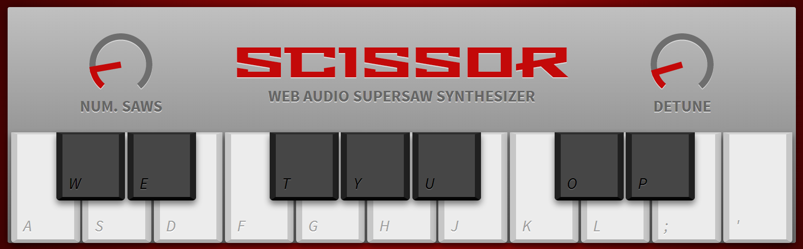

I Аудио филтри за уеб. Примери
1 Въведение в Web Audio API
Въпреки, че темата е относно примери за аудио филтри за уеб е оправдано първо да се обясни как се генерира аудио в една компютърна система, имайки предвид, че повечето читатели не биха били наясно с това. Ако читателят вече запознат с това, то може да пристъпи към секция I.2. Аудио в уеб може да се генерира по много начини, но обхвата на този реферат е как правим това чрез Web Audio API.
1.1 Web Audio API
Най-разпространената библиотека за генериране на звук в уеб е Web Audio API. При нея аудио операциите[1] се извършват посредством аудио върхове (nodes)[2], свързани помежду си оформяйки аудио граф (audio routing graph)[3].
Има няколко типа аудио върхове в този граф, съответно източници (sources), филтри (filters) и дестинации (destinations). Както имената подсказват, аудиото се генерира в източниците (напр. осцилатор), преминава през набор филтри изменящи звука и се предава на дестинации (напр. тонколони).
1.2 Аудио буфери, извадки и канали
В природата звукът може да се разглежда като непрекъсната функция. На практика това няма как да се представи директно в един компютър и поради това се налага разбиването на непрекъсната функция на малки парчета. Това е така наречения процес на дигитализация. В Web Audio API този процес на дигитализация наричаме sampling. Така един времеви интервал от звук, може да се разбие на n на брой парчета, като всяко от тях е число в масив.
Звукът преминава през върховете на графа под формата на поток, като един поток може да се състои от няколко канала. В зависимост от броя на каналите може да се поддържа различен тип аудио структура, като например моно, стерео, quad и 5.1.
В момент T във всеки канал от потока на звука има извадка. Групата от тези извадки наричаме sample frame на момент T. Също така sample frame-а е n-мерен вектор, където n е броят на каналите.
Този масив от frame-ове се пази в AudioBuffer, който се характеризира с дължина (бр. sample frame-ове) и честота на извадките (sample rate), което е бр. на sample frame-овете пуснати за секунда. Например един стерео буфер може да бъде представен по следния начин:

1.3 Аудио канали
Има различни видове аудио буфери, като тези поддържани от Web Audio API са представени в таблица 1.
| Аудио буфер | Канали | Инфо |
|---|---|---|
| Моно | wiki | |
| Стерео | wiki | |
| Quad | wiki | |
| 5.1 | wiki |
1.4 Заключение
В тази част разгледахме какво представлява уеб аудиото и как то работи на чисто концептуално ниво. Вече се очаква, че читателят би трябвало да бъде запознат с най-основните концепциите в компютърно генерирания звук и Web Audio API.
2 Въведение в Web Audio API
В тази глава ще се фокусираме над имплементацията на няколко уеб филтъра, чрез които да навлезем практически в Web Audio API. Започваме от прости примери докато до стигнем някои по-интересни като например Bitcrusher.
За част от примерите в тази секция като източник на аудио ще използваме звукът от тази хиена:
ЗВУК ОТ ХИЕНАВ предната част се запознахме с това какво представлявата AudioBuffer-ите и, че едно от свойствата им е дължина. Тази дължина трябва да бъде подбрана по оптимален начин защото тя влияе на това, колко често изкарваме звук, т.е. ако е твърде къса, то звука ще се застъпва и овърта, а пък ако е твърде дълга то звука ще се накъсва. Изчислено е, че около 4096 е оптималната стойност. Заради това и дефинираме следната константа:
const bufferSize = 4096;
За да можем да използваме Web Audio API за да приложим нашите филтри ще ни трябват няколко помощни функции. Преди да започнем да правим каквито и да е ефекти ще трябва да се сдобием с аудио контекста на текущата страница. Това правим чрез следната функция, която е съвместима дори и с IE. Аудио контекста се използва за създаване на аудио върхове.
function getAudioContext() {
let AudioContext = window.AudioContext || window.webkitAudioContext;
return new AudioContext();
}
За да се сдобием със звука на хиена ще ни трябва някакъв начин да го изтеглим. Звукът от този пример е качен в S3 bucket с CORS полица за достъп отвсякъде и е достъпен на https://hyenabucket.s3.amazonaws.com/hyena.mp3. Сдобиването правим посредством следната функция:
function getAudioFromFile(soundFile) {
var audio = new Audio();
audio.src = soundFile;
audio.crossOrigin = "anonymous";
document.body.appendChild(audio);
return audio;
}
Накрая, но не по важност, ще ни трябва някакъв начин да изпълняваме филтрите, които пишем като част от това упражнение. Това става посредством функцията:
function playFilter(soundFile, effectProvisioner) {
let context = getAudioContext();
let effect = effectProvisioner(context);
let audio = getAudioFromFile(soundFile);
let source = context.createMediaElementSource(audio);
source.connect(effect);
effect.connect(context.destination);
audio.play();
}
2.1 Low pass filter
Low pass филтърът е филтър, който пропуска само сигнали с честота по-ниска от даден праг, отслабвайки тези с честота над него. Може да се имплементира по следния начин.
function getLowPassEffect(audioCtx) {
let lastOut = 0.0;
let node = audioCtx.createScriptProcessor(BUFFER_SIZE, 1, 1);
node.onaudioprocess = function(e) {
let input = e.inputBuffer.getChannelData(0);
let output = e.outputBuffer.getChannelData(0);
for (let i = 0; i < BUFFER_SIZE; ++i) {
output[i] = (input[i] + lastOut) / 2.0;
lastOut = output[i];
}
}
return node;
};
В този пример дефинираме наш filter node от тип scriptProcessor, който позволява да използваме специфична логика за да постигнем това, което искаме. В случая се възползваме от това, че филтърната функция е closure и използваме външна променлива, в която на всяко завъртане на цикъла запазваме предната честота на звука. Така няма накъсване между изпълнението на отделните аудио буфери и спазваме базовия шаблон на всеки аудио филтър - получаваме два масива, съответно за вход и изход, циклим по входния масив като манипулираме всяка извадка (sample) и я записваме обратно в изходния масив.
В общи линии този ефект е от по-скучните и няма да се усети разлика от оригиналния звук. Можете да го чуете като натиснете бутона отдолу. В следващите глави ще разгледаме няколко по-интересни ефекта.
LOW PASS ЕФЕКТ2.2 Pinking filter
Pinking филтърът представлява смесица между розов и бял шум, като кара звука, който излиза да звучи малко по смекчено. На код изглежда така:
function getPinkingEffect(audioCtx) {
let b0, b1, b2, b3, b4, b5, b6;
b0 = b1 = b2 = b3 = b4 = b5 = b6 = 0.0;
let node = audioCtx.createScriptProcessor(BUFFER_SIZE, 1, 1);
node.onaudioprocess = function(e) {
let input = e.inputBuffer.getChannelData(0);
let output = e.outputBuffer.getChannelData(0);
for (var i = 0; i < BUFFER_SIZE; i++) {
b0 = 0.99886 * b0 + input[i] * 0.0555179;
b1 = 0.99332 * b1 + input[i] * 0.0750759;
b2 = 0.96900 * b2 + input[i] * 0.1538520;
b3 = 0.86650 * b3 + input[i] * 0.3104856;
b4 = 0.55000 * b4 + input[i] * 0.5329522;
b5 = -0.7616 * b5 - input[i] * 0.0168980;
output[i] = b0 + b1 + b2 + b3 + b4 + b5 + b6 + input[i] * 0.5362;
output[i] *= 0.11;
b6 = input[i] * 0.115926;
}
}
return node;
}
Очевидно този пример използва почти същата логика като low-pass филтъра с разликата в това, че тук са използвани 6 low-pass филтъра за разлика от предния пример. С други думи както се забелязва b0 осреднява силата си с предишната си стойност, b1 също прави това и т.н. Тези 6 филтъра са комбинирани с точните стойности така, че средно да се получи приблизително -3 децибела на октава. Като цъкнете долния бутон може да забележите ефекта.
PINKING ЕФЕКТПочти не се забелязва.
2.3 Усукващ филтър
Това е един от най-готините ефекти, които могат да бъдат получени и също един от най-разпространените в практиката. Представлява математически ефект, който може да се насложи върфу аудио за да се получат някой много реалистични ефекти. Примери за неговата употреба са използването му за симулация на акустично пространство в концертна зала, приглушен звук от гардероб, подводен звук и прочие. На кратко конволюцията комбинира два звука, този от източника, който се процесира и такъв, наречен импулсивен отговор (impulse response).
За да го имплементираме ще трябва да си генерираме импулсивен отговор. За да е забавно ще генерираме стерео буфер с шум:
function generateStereoNoise(context) {
let noiseBuffer = context.createBuffer(2, 0.5 * context.sampleRate, context.sampleRate);
let left = noiseBuffer.getChannelData(0);
let right = noiseBuffer.getChannelData(1);
for (let i = 0; i < noiseBuffer.length; i++) {
left[i] = Math.random() * 2 - 1;
right[i] = Math.random() * 2 - 1;
}
return noiseBuffer;
}
В обши линии тук създаваме бял шум с дължина от 0.5 секунди, който се подава съответно на L и R каналите в един стерео буфер. За да бъде пълен нашия пример ще трябва да създадем ConvolderNode и да го обвържем с източник. За още по зловещ ефект ще използваме звука на хиена от по-рано за да дефинираме следната функция.
function startConvolvingEffect() {
let context = getAudioContext();
let audio = getAudioFromFile(HYENA_SOUND_FILE);
let source = context.createMediaElementSource(audio);
let noiseBuffer = generateStereoNoise(context);
let convolver = context.createConvolver();
convolver.buffer = noiseBuffer;
source.connect(convolver);
convolver.connect(context.destination);
audio.play();
}
Тук по познатата ни вече процедура създаваме аудио контекст. Чрез него вмъкваме източника на хиеновски звук, свързваме го с ConvolverNode. ConvolverNode го свързваме с дестинацията на звука (наше хардуерно устройство) и пускаме звука. Може да се чуе от бутона по-долу.
(ЗЛОВЕЩ) УСУКВАЩ ЕФЕКТ ВЪРХУ СМЯХ НА ХИЕНА2.4 Moog filter
Това е класически ефект, чрез който се постига ефект на резонанс. Чрез кода в този пример този ефект може да се апроксимира много добре, но това е просто заобиколен начин да се постигне това.
function getMoogEffect(audioCtx) {
let node = audioCtx.createScriptProcessor(BUFFER_SIZE, 1, 1);
let in1, in2, in3, in4, out1, out2, out3, out4;
in1 = in2 = in3 = in4 = out1 = out2 = out3 = out4 = 0.0;
node.cutoff = 0.065; // between 0.0 and 1.0
node.resonance = 3.99; // between 0.0 and 4.0
node.onaudioprocess = function(e) {
let input = e.inputBuffer.getChannelData(0);
let output = e.outputBuffer.getChannelData(0);
let f = node.cutoff * 1.16;
let fb = node.resonance * (1.0 - 0.15 * f * f);
for (let i = 0; i < BUFFER_SIZE; i++) {
input[i] -= out4 * fb;
input[i] *= 0.35013 * (f*f)*(f*f);
out1 = input[i] + 0.3 * in1 + (1 - f) * out1; // Pole 1
in1 = input[i];
out2 = out1 + 0.3 * in2 + (1 - f) * out2; // Pole 2
in2 = out1;
out3 = out2 + 0.3 * in3 + (1 - f) * out3; // Pole 3
in3 = out2;
out4 = out3 + 0.3 * in4 + (1 - f) * out4; // Pole 4
in4 = out3;
output[i] = out4;
}
}
return node;
}
2.5 Bitcrusher
Този ефект "дигитализира" входния сигнал като го възпроизвежда във стъпаловиден вид и на парчета. Това става като запазва извадка от входния сигнал на определени периоди, които са определени от битовете и честотата на промяна на звука подадени като настройка на върха. Имплементацията изглежда по следния начни:
function getMoogEffect(audioCtx) {
let node = audioCtx.createScriptProcessor(BUFFER_SIZE, 1, 1);
node.bits = 4; // between 1 and 16
node.normfreq = 0.1; // between 0.0 and 1.0
let step = Math.pow(1/2, node.bits);
let phaser = 0;
let last = 0;
node.onaudioprocess = function(e) {
let input = e.inputBuffer.getChannelData(0);
let output = e.outputBuffer.getChannelData(0);
for (let i = 0; i < BUFFER_SIZE; i++) {
phaser += node.normfreq;
if (phaser >= 1.0) {
phaser -= 1.0;
last = step * Math.floor(input[i] / step + 0.5);
}
output[i] = last;
}
};
return node;
}
Първо създаваме познатия ни scriptProcessorNode, в който ще дефинираме нашите ефекти. Тук отново експлоатираме свойството на closure функциите да се пазят външни променливи, като по този начин помним на всяка итерация каква е била последна фаза и съответната честота на звука тогава. Самия closure дефиниращ филтъра върти цикъл по входните и изходните данни, като на всяка итерация се отмества с една фаза напред и ако тази фаза е надвишила даден праг (в случая 1.0), то текущшя звук се променя в противен случай се използва честота от предната итерация.
Кликнете на бутона отдолу ако желаете да чуете ефекта.
BITCRUSHER ЕФЕКТ2.6 Заключение
В тази секция обърнахме повече внимание над това какво представлява Web Audio API и как то може да се приложи чрез няколко практически примера.
3 Монотронен синтезатор чрез Web Audio API

В тази секция ще разгледаме това как можем да си направим монотрон използвайки Web Audio API. Той предствлява един малък синтезатор. Схемата на един монотрон е показана отдолу:

Както се вижда на блоковата схема монотронът е един доста прост синтезатор. Състои се трионообразен осцилатор (VCO), LFO и lowpass filter (VCF). Ограничен е от това, че в даден момент може само една нота да бъде изпълнена. За да възпроизведем синтезатора ще го приложим статегията "Разбивай и владей" като го разбием на 3 части:
- аудио верига, която генерира звука чрез Web Audio API.
- контролен панел, представляващ копчетата на синтезатора.
- лентова клавиатура, която предава сигналите от копчетата към адуио веригата
3.1 Аудио верига
Ще започнем с имплементацията на аудио веригата. За да я сглобим ще използваме OscillatorNode за VCO и LFO, а за lowpass filter (VCF) вместо да си пишем отново наш ще използваме вградения BiquadFilterNode в Web Audio API. За начало ще приложим добрите ООП практики като обвием всичко в един клас на име Monotron.
class Monotron
constructor: (@context) ->
@vco = @context.createOscillator()
@lfo = @context.createOscillator()
@lfoGain = @context.createGain()
@vcf = @context.createBiquadFilter()
@output = @context.createGain()
@vco.connect @vcf
@vcf.connect @output
@lfo.connect @lfoGain
@lfoGain.connect @vcf.frequency
@output.gain.value = 0
@vco.type = @vco.SAWTOOTH
@lfo.type = @lfo.SAWTOOTH
@vco.start @context.currentTime
@lfo.start @context.currentTime
noteOn: (frequency, time) ->
time ?= @context.currentTime
@vco.frequency.setValueAtTime frequency, time
@output.gain.linearRampToValueAtTime 1.0, time + 0.1
noteOff: (time) ->
time ?= @context.currentTime
@output.gain.linearRampToValueAtTime 0.0, time + 0.1
connect: (target) ->
@output.connect target
За момента този клас има 4 функции contructor, noteOn, noteOff, connect. Нека разгледаме конструктора. Както споменахме преди използваме OscillatorNode за VCO и LFO. Интересното е, че освен това имаме още два GainNode-а, съответно @lfoGain и @output. @lfoGain контролира какъв е цялостния ефект на LFO над звука, като по този начин съответства на главата за интензивност на LFO. @output е направено по конвенция за да имаме контрол над крайния звук. След това тези компоненти се навръзват един за друг. След това се наслагват някои стойности по подразбиране като например силата на изходния звук да е 0 и също така нагласяме формата на вълната при vco и lfo да е трионообразна (като тази на блоковата схема).
Методът noteOn увеличава силата на звука на VCO. Интересното е, че използваме linearRampToValueAtTime, което извършва интерполация на силата на звука. Така след една секунда плавно се достига до максималната сила на звука. Методът noteOff прави обратното на noteOn.
Методът connect е просто добра конвенция, позволяваща изхода на синтезатора да се закачи към каквото си поискаме, като например това може да бъде аудио уредбата на потребителя.
3.2 Контролния панел
За момента имаме кода, който върши същинската работа, но за момента е незавършено. Трябва ни някакъв контролен панел откъдето да управляваме инструмента. Монотронът разполага с 5 глави за промяна на аудиото и копче определящо това, което LFO елемента модулира.
<div id="monotron">
<div id="brand">
<h1 id="title">Monotron</h1>
<div id="description">Analogue Ribbon Synthesizer</div>
</div>
<div id="controls">
<div class="panel">
<label>
<select id="mod">
<option>Standby</option>
<option>Pitch</option>
<option>Cutoff</option>
</select>
<br />Mod
</label>
</div>
<div class="panel">
<h2>VCO</h2>
<div class="knobs">
<div class="knob">
<input id="pitch" type="range"
min="0" max="100" data-width="40"
data-height="40" data-angleOffset="220"
data-angleRange="280">
<label>Pitch</label>
</div>
</div>
</div>
<div class="panel">
<h2>LFO</h2>
<div class="knobs">
<div class="knob">
<input id="rate" type="range" min="0"
max="100" data-width="40" data-height="40"
data-angleOffset="220" data-angleRange="280">
<label>Rate</label>
</div>
<div class="knob">
<input id="int" type="range" min="0"
max="100" data-width="40" data-height="40"
data-angleOffset="220" data-angleRange="280">
<label>Int.</label>
</div>
</div>
</div>
<div class="panel">
<h2>VCF</h2>
<div class="knobs">
<div class="knob">
<input id="cutoff" type="range" min="0"
max="100" data-width="40" data-height="40"
data-angleOffset="220" data-angleRange="280">
<label>Cutoff</label>
</div>
<div class="knob">
<input id="peak" type="range" min="0"
max="100" data-width="40" data-height="40"
data-angleOffset="220" data-angleRange="280">
<label>Peak</label>
</div>
</div>
</div>
</div>
<div id="keyboard"></div>
</div>
#brand, #controls и #keyboard съответстват на трите основни секции на синтезатора, като в #controls имаме 4 хоризонтални контролни панели.
Сега остава да приложим и малко css, за да стилизираме нашия синтезатор.
#monotron {
background-color: #212121;
border-left: 1rem solid #eaeeef;
border-right: 1rem solid #eaeeef;
border-radius: 0.38196601065988556rem;
padding: 1.61803399rem;
font-family: "Source Sans Pro", Arial, sans-serif;
color: #eaeeef;
width: 40rem;
}
h1, h2, h3 {
font-family: "Audiowide", Arial, sans-serif;
margin: 0;
font-weight: normal;
}
#brand {
margin-bottom: 1.61803399rem;
}
#title {
font-size: 2.6180339927953202rem;
text-transform: lowercase;
letter-spacing: 0.05em;
}
#description {
text-transform: uppercase;
font-weight: bold;
}
#controls {
.flex-display;
.panel {
padding: @size-base;
.flex(1);
h2 {
text-align: center;
margin-bottom: @size-base;
}
label {
text-transform: lowercase;
font-weight: bold;
}
.knobs {
.flex-display;
.knob {
.flex(1);
text-align: center;
div {
text-align: center;
width: 100% !important;
margin-bottom: @size-small;
}
}
}
&:first-child {
text-align: center;
.flex-display;
.justify-content(center);
.align-items(flex-end);
select {
margin-bottom: @size-small;
}
}
}
}
Остава да добавим главите посредством Javascript. Има една доста добра библиотека за това, която ще използваме. Останалата част от кода в тази секция показва как използваме тази библиотека за да си създадем главите, посредством тази библиотека.
Ui.P2 = function() {
};
Ui.P2.prototype = Object.create(Ui.prototype);
Ui.P2.prototype.createElement = function() {
"use strict";
Ui.prototype.createElement.apply(this, arguments);
this.addComponent(new Ui.Arc({
arcWidth: this.width / 10
}));
this.addComponent(new Ui.Pointer(this.merge(this.options, {
type: 'Rect',
pointerWidth: this.width / 10
})));
this.merge(this.options, {arcWidth: this.width / 10});
var arc = new Ui.El.Arc(this.options);
arc.setAngle(this.options.anglerange);
this.el.node.appendChild(arc.node);
this.el.node.setAttribute("class", "p2");
};
.p2 path {
stroke: none;
fill: @text-color;
stroke-weight: .1;
}
.p2 path:first-child {
fill: darken(@bg-color, 5%);
}
.p2 rect {
fill: @text-color;
}
След това за да почнем да използваме копчетата просто трябва да изпълним кода отдолу при зареждане на страницата.
$ ->
$('.knob input').each (i, knob) ->
knopf = new Knob(knob, new Ui.P2())
3.3 Лентова клавиатура
Щом вече имаме главите и работещият монотрон отзад, остава да направим клавиатурата, чрез която ще свирим. За да си направим клавиатурата ще използваме динамично генериран html и css.
noteToFrequency = (note) ->
Math.pow(2, (note - 69) / 12) * 440.0
class RibbonKeyboard
constructor: (@$el, @monotron) ->
@minNote = 57
$ul = $('')
for note in [1..18]
$key = $('- ')
if note in [2, 5, 7, 10, 12, 14, 17]
$key.addClass 'accidental'
$key.width (@$el.width() / 20)
$key.css 'left', "-#{$key.width() / 2}px"
$key.css 'margin-right', "-#{$key.width()}px"
else if note in [1, 18]
$key.width (@$el.width() / 20)
else
$key.width (@$el.width() / 10)
$ul.append $key
@$el.append $ul
@mouseDown = false
$ul.mousedown (e) =>
@mouseDown = true
@click(e)
$ul.mouseup (e) =>
@mouseDown = false
@monotron.noteOff()
$ul.mousemove @click
click: (e) =>
return unless @mouseDown
offset = e.pageX - @$el.offset().left
ratio = offset / @$el.width()
min = noteToFrequency @minNote
max = noteToFrequency (@minNote + 18)
@monotron.noteOn ratio * (max - min) + min
Както се вижда от кода конструктора създава 18 клавиша, като те са генерирани с точната ширина. Интеракцията с клавиатурата се извършва посредством стандартните mousedown, mouseup и mouseover събития в javascript.
Остава да направим клавиатурата така, че да изглежда добре. Това ще постигнем, чрез следния CSS.
#keyboard {
.box-sizing(border-box);
.box-shadow(inset 0 0 @size-base fade(@text-color, 10%));
background-color: darken(@bg-color, 8%);
border-left: @size-base solid lighten(@bg-color, 10%);
border-right: @size-base solid lighten(@bg-color, 10%);
border-top: @size-base solid darken(@bg-color, 5%);
border-bottom: @size-base solid lighten(@bg-color, 5%);
height: 7rem;
ul {
margin: 0;
padding: 0;
list-style: none;
width: 100%;
height: 100%;
li {
float: left;
height: 100%;
border-right: 1px solid @text-color;
position: relative;
.box-sizing(border-box);
&.accidental {
background-color: @text-color;
height: 70%;
}
&:last-child {
border: none;
}
}
}
}
След като приложим всичко това, клавиатурата би следвало да изглежда точно като на картинката показана отдолу.

3.4 Свързване на компоненти
До момента сме изградили всеки един компонент по-отделно, но все още не сме ги свързали по между си и следователно няма как да използваме нашия синтезатор. Ще започнем чрез скрипта отдолу, който за свързване на аудиото с клавиатурата.
$ ->
audioContext = new (AudioContext ? webkitAudioContext)()
window.monotron = new Monotron(audioContext)
masterGain = audioContext.createGain()
masterGain.gain.value = 0.7 # to prevent clipping
masterGain.connect audioContext.destination
monotron.connect masterGain
keyboard = new RibbonKeyboard($('#keyboard'), monotron)
Чрез този скрипт ние създаваме Аудио контекст и Монотрон, регулираме максималната стойност на masterGain за да не се получават застъпвания, които могат да окажат, кофти влияние на звука. След като сме създали тези елементи създаваме нов RibbonKeyboard и го свързваме с аудио веригат. Вече аудио веригата и клавиатурата са свързани.
Вече можем да произвеждаме някакви звуци и имаме полуфинкциониращ синтезатор, което е чудесно. Сега остава да свържем контролния панел. Обаче трябва ще трябва да го редактираме защото аудио параметрите трябва да бъдат скалирани логаритмично, а не линейно. Това е така защото ушите ни не възприемат добре звука когато промяната е линейна. Следователно ще променим .changed метода на главите.
# ... rest of $(document).ready callback ...
params =
rate:
param: monotron.lfo.frequency
min: 0.001
max: 900.0
scale: 1.1
int:
param: monotron.lfoGain.gain
min: 0.5
max: 500.0
cutoff:
param: monotron.vcf.frequency
min: 0.001
max: 900.0
scale: 1.03
peak:
param: monotron.vcf.Q
min: 0.001
max: 1000.0
scale: 1.10
knopfs = []
$('.knob input').each (i, knob) ->
knopf = new Knob(knob, new Ui.P2())
knopfs.push knopf
param = params[knob.id]
if param?
knopf.changed = ->
Knob.prototype.changed.apply this, arguments
# convert to log scale
scale = param.scale ? 1.05
ratio = Math.pow(scale, @value) / Math.pow(scale, @settings.max)
value = ratio * (param.max - param.min) + param.min
param.param.setValueAtTime value, audioContext.currentTime
else if knob.id == "pitch"
knopf.changed = ->
Knob.prototype.changed.apply this, arguments
keyboard.minNote = parseInt @value
Сега остава да конфигурираме модулационния рутер. LFO ще е изключено ако, то се намира в режим "Standby". В противен случай LFO ще модулира или честотата на VCO или на VCF.
# ... rest of $(document).ready callback ...
$('#mod').change (e) ->
target = $(this).find(":selected").val()
monotron.lfoGain.disconnect()
if target is "Pitch"
monotron.lfoGain.connect monotron.vco.frequency
else if target is "Cutoff"
monotron.lfoGain.connect monotron.vcf.frequency
Единственото нещо, което остана е да нагласим параметрите по подразбиране на монотрона, което ще направим чрез следния фрагмент код:
# ... rest of $(document).ready callback ...
# the initial "patch"
$("#pitch").val 57
$("#rate").val 46
$("#int").val 97
$("#cutoff").val 72
$("#peak").val 57
$("#mod").val "Pitch"
knopfs.forEach (knopf) ->
knopf.changed 0
3.5 Заключение
В тази секция се запознахме с това как можем да приложим Web Audio API за да направим нещо по-голямо и практически приложимо.
Супер-трионов синтезатор чрез Web Audio API
Един от проблемите на дигиталното аудио е, че не може да възпроизведе добре звуците от аналоговото. Това се имало предвид от дизайнерите на супер-трионовия синтезатор, като той просто представлява съвкупност от разстроени осцилатори, произвеждащи трионообразни вълни, които се изпълняват едновременно на различни честоти. За краткост тези осцилатори ще наричаме трионови осцилатори.
От историческа гледна точка този синтезатор е сравнително млад като инструмент. Първият такъв е произведен през 1996 под името "Roland JP-8000". Малко по-късно идеята е била доразвита с излизането на хипер-трионовия синтезатор "Access Virus", разполагащ с 9 разстроени трионови осцилатора. Днешно време тези синтезатори може да имат стотици разстроени осцилатори.
Подобно на монотронния синтезатор този ще го направим по същия шаблон (повторението е майка на знанието), като първо направим аудио веригата, след това UI под формата на клавиатура и въртящи се копчета. Също така ще го имплементираме на Coffe Script.
Аудио верига
Кодът написан в този пример ще е предимно на CoffeeScript.
Аудио веригата ще имплементираме под формата на два класа. Един за управление на дадена нота и друг агрегиращ ноти, като ги управлява такъв начин, че синтезаторът да полифоничен, т.е. нотите да могат да се изпълняват едновременно. Ще започнем с класа ScissorVoice, който ще резпрезентира нота.
class ScissorVoice
constructor: (@context, @frequency, @numSaws, @detune) ->
@output = @context.createGain()
@maxGain = 1 / @numSaws
@saws = []
for i in [0...@numSaws]
saw = @context.createOscillator()
saw.type = saw.SAWTOOTH
saw.frequency.value = @frequency
saw.detune.value = -@detune + i * 2 * @detune / (@numSaws - 1)
saw.start @context.currentTime
saw.connect @output
@saws.push saw
start: (time) ->
@output.gain.setValueAtTime @maxGain, time
stop: (time) ->
@output.gain.setValueAtTime 0, time
setTimeout (=>
# remove old saws
@saws.forEach (saw) ->
saw.disconnect()
), Math.floor((time - @context.currentTime) * 1000)
connect: (target) ->
@output.connect target
Както се вижда на кода, конструктора на дадена нота създава @numSaws на брой трионови осцилатора, разстроени равномерно в интервала (-@detune; @detune), работещи на честота @frequency и свързани към @output. Трябва да се има предвид, че при изпълнение на звука, понеже всички осцилатори са свързани към изхода, то тяхната звукова стойност ще се наслагва като тя е дефинирана от (-1.0; 1.0). Заради това дефинираме @maxGain за всеки осцилатор равен на 1 / @numSaws, като така стойността на звука се запазва в интервала (-1.0; 1.0). В противен случай звука ще се отклонява много от интервала и няма да се чува адекватно.
Съответно при извикване на start метода се слага въпросната стойност @maxGain, която се подава на всеки осцилатор. При извикване на stop метода стойността на звука става 0 и трионовите осцилатори се откачат от изхода.
Щом имаме нотите е време да се сдобием с някакъв механизъм, който ги оркестрира. Ще го имплементираме под формата на класа Scissor.
class Scissor
constructor: (@context) ->
@numSaws = 3
@detune = 12
@voices = []
@output = @context.createGain()
noteOn: (note, time) ->
return if @voices[note]?
time ?= @context.currentTime
freq = noteToFrequency note
voice = new ScissorVoice(@context, freq, @numSaws, @detune)
voice.connect @output
voice.start time
@voices[note] = voice
noteOff: (note, time) ->
return unless @voices[note]?
time ?= @context.currentTime
@voices[note].stop time
delete @voices[note]
connect: (target) ->
@output.connect target
Както се вижда в конструктора дефинираме броя на трионовите осцилатори за всяка нота и съответното ѝ разстройване. Освен това поддържаме масив от ноти. Ако една нота е в масива с ноти, то това означава, че тя се изпълнява в момента. Scissor класът разполага с два метода, съответно noteOn за стартиране на нота и noteOff за спирането ѝ.
При изпълнение на noteOn, ако дадената нота не се изпълнява в момента, то тя се създава, свързва се със звуковия изход, стартира се и се добавя в масива с ноти. Нейната честота се определя от нейния MIDI номер. Това се прави, чрез функцията отдолу.
noteToFrequency = (note) ->
Math.pow(2, (note - 69) / 12) * 440.0
Схемата зад MIDI нотите е, че нота 69 съответсва на 440Hz. След нея всяка друга нота е с 21/12 пъти по-голяма честота от предната, като например нота 70 е с честота 21/12*440.0Hz = 466.16Hz.
Аудио веригата може да се тества като coffee script се конвертира към js и се изпълни следния код:
var audioContext = new webkitAudioContext();
var scissor = new Scissor();
scissor.connect(audioContext.destination);
scissor.noteOn(60); // C4
scissor.noteOn(64); // E4
scissor.noteOn(67); // G4
Потребителски интерфейс
За генерирането на css ще използваме Less. Добра практика е при работата с Less да се дефинират някои общи променливи, относно размера на елементите на страницата. Също така ще импортираме някои библиотеки като normalize.less и preboot.less, като всъщност preboot.less ще използваме за да предефинираме някои Bootstrap стилове.
@import "normalize.less";
@import "preboot.less";
@import "flexbox.less";
@phi: 1.61803399;
@size-nano: unit(pow(@phi, -4), rem);
@size-micro: unit(pow(@phi, -3), rem);
@size-tiny: unit(pow(@phi, -2), rem);
@size-small: unit(pow(@phi, -1), rem);
@size-base: unit(pow(@phi, 0), rem);
@size-large: unit(pow(@phi, 1), rem);
@size-huge: unit(pow(@phi, 2), rem);
@size-massive: unit(pow(@phi, 3), rem);
@size-epic: unit(pow(@phi, 4), rem);
@synth-color: #737373;
@header-color: #c30909;
<div id="scissor">
<div id="controls">
<div class="panel">
<div class="knob">
<input id="saws" type="range" min="1"
max="15" data-width="62" data-height="62"
data-angleOffset="220" data-angleRange="280" />
<label>Num. Saws</label>
</div>
</div>
<div class="title panel">
<h1><a href="http://noisehack.com/">Scissor</a></h1>
<p>Web Audio Supersaw Synthesizer</p>
</div>
<div class="panel">
<div class="knob">
<input id="detune" type="range" min="0"
max="100" data-width="62" data-height="62"
data-angleOffset="220" data-angleRange="280" />
<label>Detune</label>
</div>
</div>
</div>
<div id="keyboard"></div>
</div>
Щом вече разполагаме със структурата на нашата страница е време да я стилизираме. Ще започнем със клавиатурата.
#scissor {
#gradient.vertical(lighten(@synth-color, 30%), @synth-color);
padding-left: @size-micro;
padding-right: @size-micro;
border-radius: @size-nano;
.box-shadow(0 0 @size-base rgba(0,0,0,0.5));
}
#controls {
padding: @size-base;
margin-top: @size-small;
.border-top-radius(@size-nano);
.box-sizing(border-box);
.flex-display;
.panel {
.flex(1);
.justify-content(center);
.align-items(center);
text-align: center;
.knob {
div {
text-align: center;
width: 100% !important;
}
label {
margin: 0;
padding: 0;
text-transform: uppercase;
font-weight: 700;
color: darken(@synth-color, 5%);
text-shadow: 0 1px 0 lighten(@synth-color, 40%);
}
}
&.title {
.flex(2);
.flex-display;
.flex-direction(column);
h1 {
margin: 0;
padding: 0;
a {
color: @header-color;
text-shadow: 0 1px 0 lighten(@synth-color, 40%);
font-size: @size-huge;
line-height: 1;
font-family: "Stalinist One", sans-serif;
font-weight: 400;
text-transform: uppercase;
text-decoration: none;
}
}
p {
margin: 0;
padding: 0;
text-transform: uppercase;
font-weight: 700;
color: darken(@synth-color, 5%);
text-shadow: 0 1px 0 lighten(@synth-color, 40%);
}
}
}
}
Клавиатурата
Щом вече сме създали аудио веригата и потребителския интерфейс е време да добавим и клавиатура, която да комуникира с аудио веригата. Функционалността ще поставим CoffeeScript клас на име VirtualKeyboard. За да не е hardcode-нато всичко и за да може да не е tightly-coupled към нашия синтезатор, клавиатурата ще приема callback функции при изпълнение на функциите noteOn и noteOff.
class VirtualKeyboard
constructor: (@$el, params) ->
@lowestNote = params.lowestNote ? 48
@letters = params.letters ? "awsedftgyhujkolp;'".split ''
@noteOn = params.noteOn ? (note) -> console.log "noteOn: #{note}"
@noteOff = params.noteOff ? (note) -> console.log "noteOff: #{note}"
@keysPressed = {}
@render()
@bindKeys()
@bindMouse()
_noteOn: (note) ->
return if note of @keysPressed
$(@$el.find('li').get(note - @lowestNote)).addClass 'active'
@keysPressed[note] = true
@noteOn note
_noteOff: (note) ->
return unless note of @keysPressed
$(@$el.find('li').get(note - @lowestNote)).removeClass 'active'
delete @keysPressed[note]
@noteOff note
За леснота при обработка на събития от мишката ще използваме библиотеката Mousetrap. Така като натискаме клавиши от клавиатурата ще се изпълнява съответната нота. Също ще нагласим промяната на октавите чрез клавиши. При натискане на z нотите ще се отместват с една октава надолу, докато при x с една нагоре.
bindKeys: ->
for letter, i in @letters
do (letter, i) =>
Mousetrap.bind letter, (=>
@_noteOn (@lowestNote + i)
), 'keydown'
Mousetrap.bind letter, (=>
@_noteOff (@lowestNote + i)
), 'keyup'
Mousetrap.bind 'z', =>
# shift one octave down
@lowestNote -= 12
Mousetrap.bind 'x', =>
# shift one octave up
@lowestNote += 12
Освен чрез клавиатурата ще трябва да позволим на потребителя да използва мишката за да натиска клавишите от потребителския интерфейс. Това ще го позволим чрез кода отдолу:
bindMouse: ->
@$el.find('li').each (i, key) =>
$(key).mousedown =>
@_noteOn (@lowestNote + i)
$(key).mouseup =>
@_noteOff (@lowestNote + i)
Единственото нещо, което остава за да довършим клавиатурата е да добавим CSS за нейното стилизиране. Подбрали сме стил с бели и черни клавиши като класическо пиано примесен с малко стил на компютърна клавиатура. За да промените цветовете на клавишите можеде да промените RGB стойностите на променливите @white-key и @black-key.
@white-key: rgb(236, 236, 236);
@black-key: rgb(70, 70, 70);
.piano-key(@color) {
background-color: @color;
color: darken(@color, 30%);
text-shadow: 0 1px 0 lighten(@color, 10%);
border-top: @size-nano solid darken(@color, 10%);
border-left: @size-tiny solid darken(@color, 15%);
border-right: @size-tiny solid darken(@color, 15%);
border-bottom: @size-micro solid darken(@color, 25%);
.box-shadow(0 @size-micro @size-small rgba(0,0,0,0.5));
&.active {
.box-shadow(0 @size-nano @size-micro rgba(0,0,0,0.5));
text-shadow: 0 1px 0 @color;
#gradient.vertical(@color, darken(@color, 10%));
}
}
#keyboard {
cursor: pointer;
ul {
margin: 0 auto;
padding: 0;
list-style: none;
li {
float: left;
width: @size-massive;
height: @size-epic;
text-transform: uppercase;
font-style: italic;
padding-left: @size-tiny;
padding-bottom: @size-micro;
margin-right: @size-nano;
.box-sizing(border-box);
.flex-display;
.align-items(flex-end);
.border-bottom-radius(@size-micro);
.piano-key(@white-key);
&.accidental {
position: relative;
margin-left: -@size-large;
margin-right: -(@size-large + (@size-massive / 2));
height: @size-massive;
.piano-key(@black-key);
}
&:last-child {
margin-right: 0;
}
}
}
}
Свързване на всичко
Веднъж щом са създадени отделните компоненти не могат да работят от само себе си и ще трябва някакъв код, който да ги свърже. Това ще постигнем чрез кода отдолу.
$ ->
audioContext = new (AudioContext ? webkitAudioContext)
masterGain = audioContext.createGain()
masterGain.gain.value = 0.7
masterGain.connect audioContext.destination
window.scissor = new Scissor(audioContext)
scissor.connect masterGain
keyboard = new VirtualKeyboard $("#keyboard"),
noteOn: (note) ->
scissor.noteOn note
noteOff: (note) ->
scissor.noteOff note
setNumSaws = (numSaws) ->
scissor.numSaws = numSaws
setDetune = (detune) ->
scissor.detune = detune
sawsKnob = new Knob($("#saws")[0], new Ui.P2())
sawsKnob.changed = ->
Knob.prototype.changed.apply this, arguments
setNumSaws @value
$("#saws").val scissor.numSaws
sawsKnob.changed 0
detuneKnob = new Knob($("#detune")[0], new Ui.P2())
detuneKnob.changed = ->
Knob.prototype.changed.apply this, arguments
setDetune @value
$("#detune").val scissor.detune
detuneKnob.changed 0
Заключение
В тази глава разгледахме как можем да направим супер-трионов синтезатор. Въпреки простотата на този синтезатор чрез него могат да бъдат постигнати някои наистина впечатляващи ефекти. С този пример приключва нашата разходка из възможностите на Web Audio API. За повече информация може да потърсите официалната документация.
II Фигури
- Фиг. 1 Аудио буфер - Представя как аудио буферите са структурирани като масив от frame-ове, състящи се от скалари наречени извадки, отговарящи на всеки канал.
- Фиг. 2 Монотронен синтезатор - Снимка на физически монотронен синтезатор.
- Фиг. 3 Електрическа схема на монотронен синтезатор - Представя как елементите в аудио веригата, която целим да построим са свързани от електрическа гледна точка. Класовете в примера се базират изцяло на тази архитектура.
- Фиг. 4 Лентова клавиатура
- Фиг. 5 Супер-трионов синтезатор - Картинка на синтезатора, който се опитваме да получим в примера.
III Речник
IV Ресурси
- Web Audio API MDN reference:
[https://developer.mozilla.org/en-US/docs/Web/API/Web_Audio_API] - Basic concepts behind Web Audio API:
[https://developer.mozilla.org/en-US/docs/Web/API/Web_Audio_API/Basic_concepts_behind_Web_Audio_API] - Custom Audio effects in Javascript with the Web Audio API:
[http://noisehack.com/custom-audio-effects-javascript-web-audio-api/] - How to Build a Monotron Synth with the Web Audio API:
[http://noisehack.com/how-to-build-monotron-synth-web-audio-api/] - How to Build a Supersaw Synthesizer with the Web Audio API:
[http://noisehack.com/how-to-build-supersaw-synth-web-audio-api/]